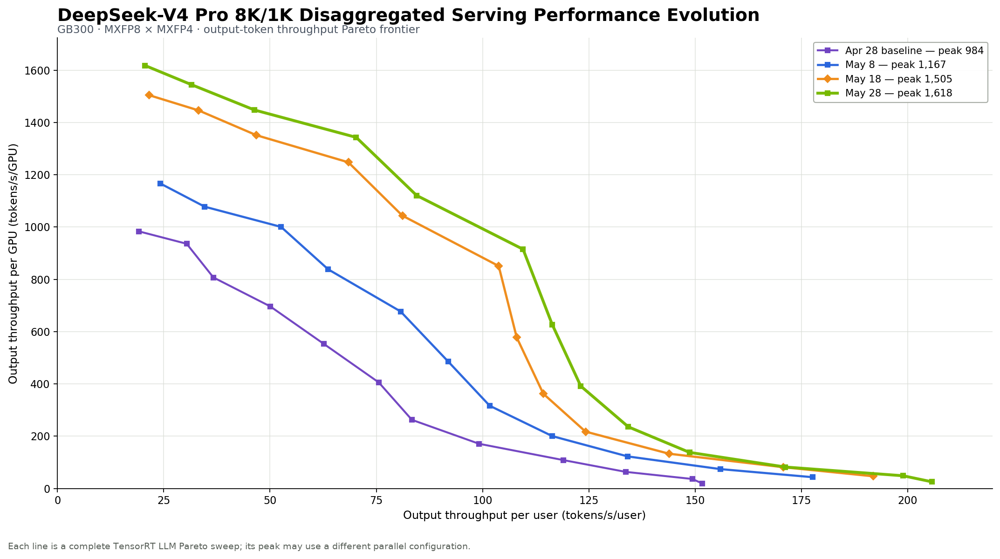

DeepSeek-V4 on NVIDIA Blackwell: Model-Specific and Agentic-Workload Optimizations in TensorRT LLM#
By NVIDIA TensorRT LLM Team
Table of Contents#
Introduction#
DeepSeek-V4’s hybrid attention, online compression, mHC, and MoE design make production inference a model-and-system co-design problem. This blog follows TensorRT LLM’s optimization journey on NVIDIA Blackwell in two parts: first building and optimizing a production-ready DeepSeek-V4 model stack, then extending the optimization boundary to routing, KV reuse, host efficiency, and control-plane efficiency for agentic workloads. On GB300, the latest measured fixed-shape sweep increased peak output throughput from 984 to 1,618 tokens/s/GPU, a 64.5% improvement, while NVIDIA’s GB300 AA-AgentPerf configurations, run and verified by Artificial Analysis, reached 57.5 concurrency per GPU (CPG) at SLO20 and 19.2 CPG at SLO60.
Part I. DeepSeek-V4 Model Support and Optimizations#
Building a Production-Ready DeepSeek-V4 Stack#
Supporting DeepSeek-V4 required more than registering a new model class. Relative to DeepSeek-V3.2, the model replaces homogeneous sparse attention with a hybrid scheme that interleaves three attention modes across layers, adds an online sequence Compressor with its own persistent state, wraps every attention and MoE block in manifold-constrained hyper-connections (mHC), and updates the MoE routing and checkpoint layout. All of this must compose with the production features users expect from TensorRT LLM: Multi-Token Prediction (MTP), parallel execution, chunked prefill, KV-cache reuse, CUDA Graphs, the overlap scheduler, and disaggregated serving.
TensorRT LLM implements DeepSeek-V4 as a dedicated PyTorch-backend model, DeepseekV4ForCausalLM, together with a DeepSeek-V4 sparse-attention backend and a specialized DeepseekV4CacheManager, targeting NVIDIA Blackwell GPUs (SM100+). This section describes that foundation. The performance optimizations built on top of it are covered in DeepSeek-V4 Performance Optimizations.
Model support and parallelism#
DeepSeek-V4 is released in two model scales, each with Base and Instruct variants. TensorRT LLM loads both directly from their checkpoint metadata.
Checkpoint family |
Total parameters |
Activated parameters |
Published precision |
|---|---|---|---|
DeepSeek-V4-Flash-Base / -Flash |
284B |
13B |
FP8 mixed / FP4 + FP8 mixed |
DeepSeek-V4-Pro-Base / -Pro |
1.6T |
49B |
FP8 mixed / FP4 + FP8 mixed |
The implementation reads the attention layout from the checkpoint rather than hard-coding serving assumptions: the per-layer compression-ratio list (Flash begins [0, 0, 4, 128, ...], while Pro begins [128, 128, 4, 128, ...], and 0 marks a sliding-window-only layer), the 128-token sliding window, and the Indexer configuration including its Top-K (512 for Flash and 1024 for Pro).
Hybrid attention: SWA, CSA, and HCA#
DeepSeek-V4’s largest architectural change is its attention. DeepSeek-V3.2 introduced DeepSeek Sparse Attention (DSA), in which a learned Indexer scores the KV history and a Top-K selector supplies token indices to sparse MLA (see our DeepSeek-V3.2 optimization blog). TensorRT LLM implemented DSA on a general sparse-attention framework that separates the algorithm-specific selection logic from the attention backend that consumes the selected indices. DeepSeek-V4 builds on the same separation but adds online compression and interleaves three layer types, determined by each layer’s compression ratio:
Attention mode |
Ratio |
History visible to each query |
Selection and computation |
|---|---|---|---|
Sliding Window Attention (SWA) |
0 |
The latest 128 raw tokens |
Dense attention inside the window. No Compressor or Indexer. |
Compressed Sparse Attention (CSA) |
4 |
Latest 128 raw tokens + 4× compressed entries from completed compression groups |
The Indexer scores the compressed entries. Sparse MLA attends to the window plus the Top-K selected entries. |
Heavily Compressed Attention (HCA) |
128 |
Latest 128 raw tokens + all 128× compressed entries from completed compression groups |
Dense attention over all completed compressed entries. No Indexer or Top-K stage. |

Figure 1. DeepSeek-V4 hybrid attention. (a) SWA attends densely within the 128-token sliding window. (b) CSA augments that window with Top-K entries selected from the 4× compressed history. (c) HCA attends to the window and the complete 128× compressed history without an Indexer.
At the kernel boundary, the history is represented as two cache pools, one for the sliding window and one for compressed entries, and a unified dual-pool MLA operator serves all three modes: it processes the sliding window first, then the selected CSA entries or the full HCA compressed stream, and combines both in one online-softmax reduction. An SWA-only layer simply passes an empty second pool. Selected compressed positions are converted from cache-page-local offsets to token-level global addresses before the attention kernel consumes them. Because KV compression makes the attention workload vary by query, TensorRT LLM passes a per-query topk_lens vector (sparse_mla_topk_lens in the implementation) to the FMHA kernel. It identifies the active SWA-plus-compressed index span within the fixed-width index buffer used for CUDA Graph compatibility.
Checkpoint-provided attention-sink logits are also remapped and supplied to the backend as an additional softmax sink. This dual-pool design lets the heterogeneous layer types share one attention backend, and extends the sparse-attention framework from DSA’s fine-grained token selection to DeepSeek-V4’s combination of local attention, compressed memory, and optional sparse selection.
Compressor implementation#
The Compressor produces the compressed KV entries that CSA and HCA attend to. It is a token-level, softmax-gated pooling (DeepSeek-V4 paper): each token’s projected KV entry carries a learned compression-weight vector, a learnable per-position bias is added, and a softmax over the compression window reduces the group to one entry as a weighted sum. For CSA ($m{=}4$), each output pools projected entries from two adjacent $m$-token groups, giving a $2m$-token receptive field. Consecutive outputs overlap by $m$ raw-token positions through separate projection branches. HCA instead uses disjoint $m’$-token windows ($m’{=}128$). On CSA layers the same compression operation is applied a second time to produce the compressed Indexer keys that the Indexer scores for Top-K selection, so a CSA layer maintains two compressed streams: the attention KV entries and the Indexer keys.
TensorRT LLM implements the Compressor as a fused wkv_gate projection plus dedicated CUDA kernels for prefill reduction, paged decode updates, and cache-write postprocessing. Tokens arrive incrementally: one at a time in decode, and chunk by chunk in chunked prefill, where chunk boundaries rarely align with compression windows. A compression window is often still incomplete when a forward pass ends. TensorRT LLM persists each token’s KV and score projection outputs in FP32 Compressor-state buffers for the still-open windows. Once a window completes, the compression kernels finalize its entry from this state, preserving the semantics of compressing the whole sequence in one pass. Compressed entries are written in the dtype their consumer expects: BF16 or per-tensor FP8 for the main attention cache, and blockwise FP8 or packed MXFP4 for the Indexer-K stream. The kernel fusion work on this path is covered in Compressor and mHC.
Beyond attention: mHC, MoE, and speculative decoding#
mHC hyper-connections (mHC paper). mHC widens the residual stream by a factor of 4 and mixes it around every sublayer through three dynamically generated mappings: a pre-mapping that reads the sublayer input from the expanded residual, a residual-mixing matrix projected onto the manifold of doubly stochastic matrices through 20 Sinkhorn-Knopp iterations, and a post-mapping that writes the sublayer output back into the residual streams. TensorRT LLM instantiates two mHC modules per layer (one around attention and one around the MoE block), plus an HC head that collapses the expanded residual to a single stream before the language-model head. It fuses adjacent post- and pre-mappings at the attention-to-MoE boundary and, where possible, across consecutive transformer layers.
MoE. Both model scales activate six routed experts and one shared expert per token, selecting from 256 routed experts in Flash and 384 in Pro. The first three layers use hash routing, where a checkpoint-provided token-ID-to-expert table maps each input token directly to its experts. Later layers use a learned gate with Sqrt-Softplus affinity scores and a score-correction bias. TensorRT LLM implements both routing modes through a shared interface that supplies the selected experts and routing weights to its configurable MoE backends. TRTLLM-Gen, DeepGEMM, and the standard CuTe DSL fused MoE backend cover the corresponding DeepSeek-V4 precision paths and preserve the checkpoint-defined swiglu_limit activation clamp, including the uniform clamp used by the NVFP4 CuTe DSL path. DeepSeek-V4 is also registered with TensorRT LLM’s expert parallel load balancer, allowing supported expert-parallel deployments to rebalance physical expert placement without changing the model’s routing semantics.

Figure 2. DeepSeek-V4 components beyond attention. (a) mHC wraps the attention and MoE sublayers with pre- and post-mappings, then uses an HC head to collapse the expanded residual stream before the language-model head. (b) The MoE router supports checkpoint-defined hash routing in the first three layers (left) and learned Sqrt-Softplus scoring with correction bias and Top-6 selection in later layers (right).
Speculative decoding. DeepSeek-V4 checkpoints with next-token prediction layers run MTP speculative decoding through the Eagle-style one-model path. Each MTP module consumes the expanded residual state from the target model or previous MTP module together with the next-token embedding, then runs the same mHC-wrapped attention-and-MoE structure as a target-model layer, using SWA for its attention. TensorRT LLM remaps the MTP weights, shares the embedding and language-model head with the target model, and extends the attention and cache metadata for the configured draft depth. The speculative-decoding performance results reported in this blog use this MTP path. DeepSeek has released dedicated DSpark checkpoints for DeepSeek-V4. DSpark adds a lightweight sequential head to a parallel draft backbone to model dependencies within a draft block, while performance tuning for this path remains in progress.
Parallelism and deployment notation#
DeepSeek-V4 adopts the same parallel strategies as DeepSeek-R1 and DeepSeek-V3.2: attention data parallelism (ADP) combined with expert parallelism (EP) for throughput-oriented serving, and tensor parallelism (TP) for latency-oriented deployments, with pipeline parallelism available for fitting the largest checkpoints. See Tech Blog 3 for the performance rationale and Tech Blog 4/8/14 for large-scale expert parallelism. Note that with ADP, max_batch_size is a per-rank limit, so benchmark concurrency must be scaled to populate all ranks.
The rest of this blog uses a compact notation for these combinations. TEP<N> shards both attention (TP) and experts (EP) across N ranks. DEP<N> keeps attention data-parallel (ADP) while distributing experts across N ranks. Both compose with disaggregated serving, where context (CTX) and generation (GEN) servers are sized independently. For example, DEP4 (CTX) + TEP8 (GEN) runs a four-rank DEP context instance alongside an eight-rank TEP generation instance.
Cache management and runtime features#
DeepSeek-V4’s hybrid attention turns the “KV cache” into a collection of states with different shapes and lifetimes. Each attention mode owns a different set of logical cache layers:
an SWA layer owns only its sliding-window KV.
a CSA layer adds the 4× compressed attention cache, Compressor KV/score state, compressed Indexer-K cache, and Indexer-Compressor KV/score state.
an HCA layer adds the 128× compressed attention cache and Compressor KV/score state, with no Indexer-side cache.
These tensors differ in dtype, bytes per entry, production rate, and lifetime. Treating them as a uniform KV tensor would either waste memory or give the scheduler an incorrect view of capacity. For the rest of this blog, we group them into two lifecycle categories. The sliding-window cache contains SWA’s sliding-window KV and the short-lived Compressor KV/score state used by CSA, HCA, and the CSA Indexer. These buffers are needed only for bounded windows over recent raw-token positions, so older pages can be recycled. The persistent compressed caches contain the finalized 4× and 128× compressed attention entries and CSA’s compressed Indexer-K entries. They represent retained history and remain available for attention and prefix reuse, so their storage grows with sequence length at the corresponding compression rate. These terms describe lifecycle categories rather than a one-to-one mapping to physical pools. DeepseekV4CacheManager describes every state as a buffer role with an explicit lifecycle and page-indexing mode, then groups compatible buffers into physical memory pools. Sliding-window cache buffers use per-layer page indices. Persistent compressed caches use shared indices across layers with the same compression layout.
The Compressor breaks two assumptions made by a conventional paged KV cache: its intermediate state is short-lived, and its persistent output grows more slowly than the raw token sequence. TensorRT LLM maps both cases onto existing KV Cache Manager V2 abstractions.
Short-lived Compressor state. A raw token’s intermediate state is needed only while a compression window that contains it remains open. Once the last such window is finalized, that token’s intermediate state can be recycled. This lifetime is naturally represented as a sliding window: 128 raw-token positions for HCA, and 8 for CSA because its overlapping Compressor keeps two 4-token groups live. The manager can therefore reuse the existing window-eviction and block-recycling machinery.
Slow-growing compressed caches. A compressed stream produces one entry for every $r$ raw tokens. Rather than introduce a second coordinate system, the manager keeps page allocation in raw-token coordinates. For a page covering tokens_per_block raw positions, its compressed buffer stores tokens_per_block / r entries. The page still represents the same interval of the original sequence, but its storage cost reflects the 4× or 128× compression ratio. Allocation, block-table construction, prefix reuse, and capacity accounting can consequently share one page model across all streams.
The physical pool split is workload-dependent. Fresh prefill creates the greatest pressure on the sliding-window cache, whereas persistent compressed caches grow with sequence length and decode concurrency. When kv_cache_config.pool_ratio is not specified, KV Cache Manager V2 derives an initial split from a representative mixed batch: one context request and up to max_batch_size - 1 generation requests. kv_cache_config.avg_seq_len controls the representative total sequence length of a typical decode request, while additional constraints reserve enough capacity for a maximum-length decode request and a chunked-prefill step. Advanced deployments can override the initial split with pool_ratio (specified in pool-group order and summing to 1.0). An opt-in beta rebalancer, enabled with enable_kv_pool_rebalance, can later adjust the split from runtime statistics. It is disabled by default and currently targets a narrower set of aggregated-serving configurations.
DeepSeek-V4 also enables SWA scratch reuse by default. During prefill, transient sliding-window pages can be recycled across compatible layers instead of being retained as independent long-lived allocations. This reduces the prefill peak that would otherwise dictate the entire pool split. Its performance impact is discussed in Runtime optimization.
With this state model in place, the same attention implementation composes with the runtime features expected in production:
Chunked prefill. The Compressor and Indexer carry compressed lengths and open-window state across chunks, preserving the semantics of processing the prompt in one pass.
KV-cache reuse. Prefix reuse restores the attention, Compressor, and Indexer state owned by each layer type, rather than treating the main attention KV as sufficient.
CUDA Graphs. Top-K and Compressor workspaces use graph-safe buffers whose captured shapes remain stable for a given graph batch size.
Overlap scheduling. Cache updates and sparse-attention preparation are designed to avoid host-device synchronizations on the critical path, allowing request preparation to overlap GPU execution.
Disaggregated serving. The V2 transfer path describes cache contents by pool, layer, and buffer role, allowing context workers to transfer every DeepSeek-V4 cache type and generation workers to rebuild their local block tables consistently.
Production support also extends to the API boundary. For Instruct checkpoints, selecting the deepseek_v4 tokenizer wrapper applies the reference chat format, including thinking controls, tool definitions, and DSML, DeepSeek’s special-token-delimited format for tool calls. Tool results are inserted with <tool_result> tags. Matching reasoning and tool parsers turn generated thinking and DSML tool-call blocks back into OpenAI-compatible response fields. Base checkpoints remain completion models and should receive raw prompts without this wrapper.
Precision strategy and accuracy#
DeepSeek-V4 uses three checkpoint-level precision recipes, each mapping low precision to the components where it reduces weight or cache bandwidth while keeping higher precision for stateful reductions and numerically sensitive paths:
Component |
FP8 (Base) |
MXFP4 (Instruct) |
NVFP4 (requantized) |
|---|---|---|---|
MoE routed experts GEMM |
Blockwise FP8 |
MXFP8 activations × MXFP4 weights |
NVFP4 |
MoE shared expert GEMM |
Blockwise FP8 |
MXFP8 |
MXFP8 |
Attention QKV/O GEMM |
Blockwise FP8 |
MXFP8 |
MXFP8 |
Indexer Q projection |
Blockwise FP8 |
MXFP8 |
MXFP8 |
Indexer weights projection |
BF16 |
BF16 |
BF16 |
Compressor KV/score linears |
BF16 |
BF16 |
BF16 |
Main attention KV cache |
BF16 or per-tensor FP8 |
BF16 or per-tensor FP8 |
BF16 or per-tensor FP8 |
Indexer K cache |
Blockwise FP8 or MXFP4 |
Blockwise FP8 or MXFP4 |
Blockwise FP8 or MXFP4 |
Compressor state cache |
FP32 |
FP32 |
FP32 |
Apart from the main-transformer routed experts, the NVFP4 checkpoint keeps its tensors identical to the MXFP4 Instruct source. In particular, the MTP subtree retains the Instruct precision recipe. The two FP4 routed-expert formats are distinct recipes served by different kernels. The Instruct checkpoints publish packed MXFP4 routed-expert weights executed with MXFP8 activations and MXFP4 weights, while the main-layer experts in requantized checkpoints such as nvidia/DeepSeek-V4-Pro-NVFP4 run through the NVFP4 MoE path. On the cache side, FP4 approximately halves the Indexer-K data payload and is TensorRT LLM’s default Indexer-K format for DeepSeek-V4 on Blackwell. The attention projections follow the same philosophy of staying in low precision across kernel boundaries. For eligible context-only sparse MLA batches, query quantization is fused into the Q RMSNorm and RoPE kernels, which write the FP8 Q buffer consumed by attention. Generation and mixed batches use the unfused Q path. For eligible DeepSeek-V4 Pro configurations, inverse RoPE and FP8 quantization are further fused into the FMHA epilogue, while other configurations use the optimized standalone inverse-RoPE and quantization kernel before o_a_proj. These kernel fusions are discussed further in Optimize the CSA/HCA hot path.
Accuracy was validated across Flash and Pro checkpoints, the FP8 (Base), MXFP4 (Instruct), and NVFP4 recipes, MTP on and off, FP8 and BF16 KV cache, and aggregated and disaggregated serving, comparing GPQA-Diamond and LiveCodeBench scores against the paper baselines. In this blog, MTP-1 and MTP-3 denote speculative draft lengths of one and three tokens, respectively. Representative GPQA-Diamond results with MTP-3 and FP8 KV cache unless noted:
Configuration |
GPQA-Diamond |
|---|---|
DeepSeek-V4-Flash |
88.8 |
DeepSeek-V4-Pro |
89.08 |
DeepSeek-V4-Pro, disaggregated |
89.39 |
DeepSeek-V4-Pro-NVFP4 |
89.39 |
Production readiness also required testing well beyond single-feature correctness: the validation matrix spans CUDA Graph capture, chunked prefill with cached history, MTP, long contexts, high concurrency, disaggregated transfer and shutdown, and memory pressure during loading and autotuning, with model-specific CI covering aggregated and disaggregated serving on Blackwell. This coverage is what turned the initial functional implementation into a stack the subsequent performance work could safely optimize.
DeepSeek-V4 Performance Optimizations#
Building on the production-ready execution stack described above, TensorRT LLM optimizes DeepSeek-V4 across four areas: the CSA/HCA attention hot path, Compressor and mHC, MoE, and runtime execution and memory management. The following sections explain the key techniques in each area, while DeepSeek-V4 Performance Evolution presents their cumulative end-to-end impact under a consistent model workload. Performance numbers cited here are scoped operator measurements or A/B end-to-end comparisons, not cumulative speedups.
Optimize the CSA/HCA hot path#
CSA and HCA share a dual-pool attention kernel over the 128-token sliding window and compressed history, while CSA additionally runs an Indexer and Top-K selection. TensorRT LLM optimizes this hot path through attention-kernel improvements, low-precision fusion, multi-stream scheduling, and Top-K optimization.
Sparse MLA kernel optimization. The dual-pool kernel processes the 128-token sliding window first, then gathers selected CSA entries or streams all HCA entries from the compressed pool. The optimized TRTLLM-Gen kernel skips redundant dense and sliding-window softmax masking on full tiles and issues sparse V loads with less coordinate setup and register spill/reload pressure. On B200 with an FP8 KV cache, the measured FMHA kernel was up to 1.31× faster for CSA prefill and 1.21× faster for HCA generation in the tested shapes. These are operator-level results, and the model-level gain depends on the model’s mix of SWA, CSA, and HCA layers.
Kernel fusion and low-precision dataflow. The functional path initially relied on framework or generic operators around attention. TensorRT LLM adds a DeepSeek-V4-specific Q RMSNorm CUDA kernel and extends the MLA RoPE/assignment and FMHA epilogue kernels so that normalization, rotation, and quantization can be fused into their producers. The resulting optimizations are:
Fused Q RMSNorm, RoPE, and FP8 quantization. The initial context path used three kernels for Q RMSNorm, RoPE and assignment, and full-Q FP8 quantization. For eligible context-only sparse MLA batches with an FP8 KV cache, TensorRT LLM folds quantization of the 448-dimensional non-RoPE segment into the Q RMSNorm kernel, then folds quantization of the remaining 64-dimensional RoPE segment and BMM-scale generation into the RoPE and assignment kernel. These two producer kernels write directly into the same FP8 Q buffer, eliminating the standalone quantization kernel and the full higher-precision normalized Q tensor. Generation and mixed batches continue to use the unfused path.
Standalone inverse-RoPE and FP8 quantization. DeepSeek-V4 first establishes an FP8-native input path for
o_a_projby combining inverse RoPE and 1×128 blockwise FP8 quantization in a standalone operator. This operator consumes the BF16 output from FMHA and writes E4M3 activations and FP32 scales directly in the layout required by the Blackwello_a_projBMM. Replacing the original Triton implementation with a shape-specialized CUDA kernel made the standalone operator 1.6–2.3× faster in kernel-only measurements across 1K–32K tokens on B200. This path remains the fallback when FMHA epilogue fusion is not applicable.FMHA epilogue fusion. Building on the same FP8
o_a_projinput contract, TensorRT LLM moves inverse RoPE and 1×128 E4M3 quantization into the FMHA correction epilogue for validated DeepSeek-V4 Pro configurations using the FP8 KV cache, sparse MLA, and attention data parallelism. FMHA then writes the E4M3 output and FP32 scales directly in the layout consumed by theo_a_projBMM, eliminating both the standalone operator launch and the intermediate BF16 output write and read. Theo_a_projBMM remains a separate kernel. This fusion supports context-only and generation-only batches, while mixed batches and unsupported configurations use the standalone path. Relative to the combined time of standard FMHA and the standalone inverse-RoPE and quantization operator, the fused FMHA kernel was up to 1.62× faster for prefill and 1.34× faster for generation in the tested shapes.Others. For CSA layers with BF16, bias-free
q_bprojection weights, a shape-autotuned CuTe DSL GEMM replaces the generic linear path on supported SM100f systems and falls back when CuTe DSL is unavailable. The optimized attention path also removes a device-to-device copy after FMHA, and FP8 quantization kernels initialize their own scale-buffer padding instead of requiring a separate host-launchedzero_()operation.
Top-K optimizations. The CSA Indexer selects hundreds of entries per query, making Top-K particularly visible during long-context decode. TensorRT LLM accelerates it in two complementary ways:
Top-K kernel optimization. TensorRT LLM makes the standard Top-K path shape-aware and device-aware. Depending on the compressed sequence length and row count, the dispatcher uses insertion selection, a single-CTA radix kernel, or a multi-CTA split-and-merge implementation. The multi-CTA path exposes enough parallel work for small decode batches, while its launch policy uses the row count, compressed sequence length, configured split threshold, and the GPU’s actual SM count. On B200 with FP32 logits, 196,608 columns,
next_n=1, and no previous indices, the device-aware policy reduced the K=512 latency at batch size 148 from 384 µs to 112 µs.GVR Top-K. GVR, introduced in our GVR technical blog, exploits the overlap between the entries selected by adjacent decode steps. It uses the previous step’s indices as candidates, verifies them against current scores, and refines or falls back when the fast-path conditions are not met. DeepSeek-V4 extends GVR to the Indexer’s 4× compressed coordinate space and to checkpoint-defined Top-K values of 512 for Flash and 1024 for Pro. In kernel-only B300 tests, GVR was 1.40–2.17× faster than the radix-selection baseline for the tested Flash and Pro shapes. An end-to-end Flash test on eight B300 SXM6 GPUs with a 65K-token input, batch size 4, and MTP-3 reported 6.4% higher request throughput.
Multi-stream attention scheduling. The CSA attention prologue contains the main-attention Compressor, the q_b projection, and an Indexer with only a few true dependencies between them. The main-attention Compressor and the query-independent part of the Indexer can start directly from the layer input, while the q_b projection and Q RMSNorm wait for the shared projection and q_a normalization. TensorRT LLM progressively exposes this parallelism at two levels:
Initial outer overlap. The first dependency-aware schedule runs the main-attention Compressor concurrently with the
q_bprojection and Q RMSNorm. It then adds a dedicated stream for the complete Indexer branch, allowing all three branches to make progress before sparse MLA consumes their outputs.Nested Indexer overlap. Inside the Indexer, query projection, RoPE, and Q quantization form one branch, while the query-independent weight projection, Indexer Compressor, and K-cache update form another. Events synchronize them only when Q scales are needed for weight scaling and when the logits and Top-K kernels require the updated cache.
Final schedule with earlier launches. The refined schedule pre-launches the main-attention Compressor and the query-independent half of the Indexer before the shared
kv_aprojection and Q/KV normalizations. Once normalized Q is available, the query-dependent Indexer work runs on its dedicated stream, while theq_bprojection and Q RMSNorm are queued after the main-attention Compressor on the Compressor stream. This is the final stream assignment, replacing the earlier three-way outer schedule.
Correctness across streams requires explicit tensor-lifetime tracking. TensorRT LLM calls record_stream() on the precomputed Indexer tensors, normalized Q output, and Top-K indices when they move to the consuming stream, preventing the PyTorch caching allocator from reusing their storage before the downstream work completes.
Compressor and mHC#
The Compressor and mHC introduce repeated chains of small, stateful, and reduction-heavy operations around attention and MoE. The Compressor turns projected KV and scores into persistent paged state and compressed cache entries, while mHC transforms the residual streams at each sublayer boundary. TensorRT LLM optimizes both in two layers: first fuse adjacent operations to remove launches and intermediate tensors, then specialize the fused kernels for DeepSeek-V4 shapes and execution regimes.
Compressor optimizations#
The optimized Compressor pipeline uses fusion at three boundaries:
KV and score projection. A single
wkv_gateprojection produces both the KV vectors and their compression scores.Compression and state update. The prefill and decode kernels write new KV/score state into paged storage and perform the online-softmax reduction when a compression window completes, avoiding separate state-update and reduction passes.
Postprocessing and cache write. One kernel applies RMSNorm, RoPE, the optional Hadamard transform, output quantization, and scatter into the compressed paged cache.
Kernel optimization. The fused Compressor kernels support the different dtype and cache-layout requirements of both the main-attention Compressor and the Compressor inside the Indexer, including BF16, FP8, and MXFP4 paths. They accept BF16 projection output directly while retaining FP32 state updates and online-softmax accumulation where required, avoiding a full FP32 KV/score intermediate. The reduction kernels are specialized for the 4×-compression decode and MTP regime and the much longer 128×-compression prefill regime, with the latter also reducing newly arrived tokens while writing their paged state to avoid a later readback.
mHC optimizations#
DeepSeek-V4 places mHC around both attention and MoE, making the boundary between consecutive sublayers the primary fusion opportunity.
Kernel fusion. TensorRT LLM fuses the previous sublayer’s post-mapping with the next sublayer’s pre-mapping into shape-specialized CUDA kernels, with both two-kernel and all-in-one tactics for different token counts. The next sublayer’s input RMSNorm is further folded into the fused mHC epilogue, eliminating a separate launch and an HBM round trip. Because mHC owns the residual connection at the attention-to-MoE boundary, the MoE path also skips separate residual handling.
Kernel optimization. No single mHC kernel is optimal across the full range of token counts M. TensorRT LLM provides FMA implementations for small-M workloads and higher-throughput MMA implementations as M grows, with two-kernel and all-in-one variants, multiple tile configurations, and Split-K support. The autotuner evaluates the valid tactics for each workload and selects the best-performing implementation, while pruning choices that are not competitive in the corresponding M regime and caching the selected tactic for reuse.
MoE optimizations#
Building on the routing design described above, TensorRT LLM optimizes DeepSeek-V4’s MoE path through a custom router GEMM, the MXFP8 × MXFP4 DeepGEMM MegaMoE backend, streamlined input preparation, and ongoing NVFP4 MegaMoE integration. These efforts preserve the model’s routing metadata, precision recipe, and checkpoint-defined swiglu_limit activation clamp.
MoE router GEMM optimization. For the 256-expert Flash shape, the score-based router uses a custom GEMM when it receives one to 16 token rows. The kernel consumes BF16 activations and weights and produces FP32 logits directly, avoiding the full FP32 input and weight casts required by the original linear path. Unsupported shapes, including the 384-expert Pro router, continue to use cuBLAS. In the reported small-shape measurements, router latency decreased from approximately 8 µs to 3 µs.
MXFP8 × MXFP4 DeepGEMM MegaMoE. For the W4A8 recipe with MXFP8 activations and MXFP4 weights, the DeepGEMM MegaMoE backend moves dispatch, the first expert GEMM, SwiGLU, the second expert GEMM, and combine into a fused-communication path that uses symmetric memory and in-kernel synchronization. In a 500-request DeepSeek-V4 Flash test on B200 with 1K-token inputs and outputs, TP4, EP4, and attention data parallelism, switching from the TensorRT LLM MoE backend to DeepGEMM MegaMoE increased throughput by 15.3% and reduced latency by 12.7%. TensorRT LLM also fuses the input preparation for this backend: instead of separately quantizing BF16 activations to MXFP8, converting selected expert indices, and copying activations, scales, indices, and routing weights into symmetric buffers, one CUDA kernel performs the quantization and writes all four outputs directly to their final buffers, reducing six GPU operations to one. No separate end-to-end gain is attributed to the preparation change.
NVFP4 MegaMoE (WIP). For native NVFP4 checkpoints, TensorRT LLM is integrating the ported Sm100MegaMoEKernel as a CuTe DSL execution backend on the SM100f path. The integration covers BF16-to-NVFP4 input quantization, dispatch, the two expert GEMMs, SwiGLU, per-route combine writes with native NVFP4 weights, and a separate reduction of the Top-K route contributions. It also includes symmetric-memory exchange for multi-rank expert parallelism and workload-specific tactic selection through the TensorRT LLM autotuner. The NVFP4 and DeepGEMM MegaMoE paths have separate hardware, quantization, and topology requirements. This precision-specific backend remains under integration and validation.
Runtime optimization#
After the major kernels are optimized, runtime overhead shifts to the boundaries between kernels, repeated metadata and data movement, and transient memory growth during long-context prefill. TensorRT LLM addresses these costs through earlier dependent launches, streamlined input preparation, and workload-aware memory control.
Programmatic Dependent Launch. PDL allows a dependent consumer grid to launch before its producer grid fully retires, wait at an explicit dependency point, and continue as soon as the required producer state is ready. TensorRT LLM configures PDL globally for supported DeepGEMM operations and also applies it to the packed 1×128 FP8 quantization, MLA RoPE, sparse-index conversion, sparse FMHA, and fused mHC paths used by DeepSeek-V4. This shortens producer-to-consumer boundaries without changing the model’s dependency graph.
Metadata preparation. TensorRT LLM streamlines DeepSeek-V4 attention-metadata preparation by reusing tensors and consolidating the host- and device-side updates required for each step, reducing Python work, kernel launches, and data transfers. The cache manager also builds DeepSeek-V4 block tables on the GPU and uses a dedicated CUDA operator instead of compiling the earlier tensor implementation, reducing host-memory pressure while keeping block-table generation on the device.
SWA scratch reuse. A long prefill step produces KV entries for every token in the input chunk, but sliding-window attention retains only the most recent window after the step. Among the new blocks allocated for the current chunk, blocks that will already be outside the final non-rewindable window are needed only by the currently executing layer. TensorRT LLM maps this scratch-eligible range through per-layer block tables to coalesced scratch subpages. Because these per-layer lifetimes do not overlap, the same physical scratch storage can be reused as execution advances across layers. Pre-existing history from earlier chunks remains in the normal KV cache and is never overwritten by scratch reuse. New blocks in the active window also remain in the normal cache, and the tail that MTP may rewind is excluded from scratch storage. As a result, the cache does not retain the full current prefill chunk independently for every compatible SWA layer, reducing long-context prefill memory consumption and leaving more capacity for larger chunks, longer prompts, or higher concurrency.

Figure 3. SWA scratch reuse during long-context prefill. Scratch-eligible blocks from the current prefill chunk reuse the same physical storage across SWA layers, while the final sliding-window state remains in the normal KV cache.
Bounded Indexer workspace. During long-context prefill, the Indexer’s MQA-logits transient grows with both the query chunk and compressed history. TensorRT LLM controls this allocation at two levels. An outer heuristic reduces the configured prefill chunk when the compressed KV history crosses long-context thresholds. Within each chunk, query tiling imposes a hard per-call element budget so that only a bounded slice of the logits matrix is materialized at a time. Because logits and Top-K are computed independently for each query row, tiling preserves the exact selection result while enabling very long prompts without reducing the model-wide token budget.
Together, these runtime optimizations help carry the preceding kernel gains through to the full model. Dependent work starts earlier, recurring host-side metadata work is reduced, and long-context memory follows a bounded working set instead of unchecked temporary growth. The next section, DeepSeek-V4 Performance Evolution, shows how the kernel and runtime improvements accumulate at the full-model level.
DeepSeek-V4 Performance Evolution#
The preceding DeepSeek-V4 Performance Optimizations section described the individual attention, Compressor, mHC, MoE, and runtime optimizations. Their real value, however, is whether they move the end-to-end serving frontier after the full system is re-tuned. We therefore tracked a sequence of complete TensorRT LLM Pareto sweeps rather than multiplying speedups from isolated operator benchmarks. Under the same DeepSeek-V4 Pro 8K/1K workload, the maximum observed output throughput increased from 984 to 1,618 tokens/s/GPU between the first validated functional baseline and the latest fully refreshed May 28 snapshot, a 64.5% improvement. Additional optimizations have since been integrated into the newer DeepSeek-V4 stack, but have not yet been included in a new full Pareto sweep.
Experimental setup#
The primary evaluation uses the InferenceX fixed-length 8K/1K workload, with exactly 8K input tokens and 1K output tokens per request. This shape stresses both sides of disaggregated serving: the context workers must process a substantial prompt, while the generation workers execute enough decode steps for sparse attention, MTP, and MoE efficiency to materially affect the result.
Item |
Configuration |
|---|---|
Model |
DeepSeek-V4 Pro, 1.6T total parameters |
Hardware |
NVIDIA GB300 |
Precision |
Mixed-precision MXFP4 Instruct recipe: MXFP8 activations × MXFP4 weights for routed-expert GEMMs, with component-specific precision elsewhere |
Workload |
InferenceX, 8K input tokens and 1K output tokens per request |
Serving mode |
End-to-end disaggregated serving with independently sized context and generation workers |
Sweep |
TEP4/TEP8 for the latency-oriented end; DEP8/DEP16/DEP32 for the throughput-oriented end; MTP-3 for most latency and mid-frontier points and MTP-1 at the highest-concurrency points |
Metrics |
Output throughput per concurrent request stream (tokens/s/user) and output throughput per GPU (tokens/s/GPU) |
Each curve in Figure 4 is a newly measured system Pareto sweep. A point can therefore change concurrency, MTP depth, parallel strategy, expert placement, and the context-to-generation resource ratio. The curve movement is the meaningful comparison; the peak values should not be interpreted as a component-by-component A/B test at an identical configuration.

Figure 4. DeepSeek-V4 Pro 8K/1K disaggregated serving on GB300, using the mixed-precision MXFP4 Instruct recipe with MXFP8 × MXFP4 routed-expert GEMMs. Each line is a complete TensorRT LLM Pareto sweep from that milestone.
From Baseline to the Latest Measured Curve#
The four curves capture three distinct phases of optimization. The table reports the highest measured tokens/s/GPU on each sweep; because the maximizing configuration changes as the frontier moves, these values summarize system evolution rather than a strict single-configuration waterfall.
Milestone |
Peak output throughput (tokens/s/GPU) |
Gain from previous |
Gain from baseline |
Representative changes in this stage |
|---|---|---|---|---|
April 28: validated baseline |
984 |
— |
— |
Validated end-to-end disaggregated stack under the common model and workload definition |
May 8: Top-K and Compressor |
1,167 |
+18.6% |
+18.6% |
Small-batch exact Top-K, BF16 Compressor input and fusion, and disaggregated memory/correctness fixes |
May 18: MegaMoE and EPLB |
1,505 |
+29.0% |
+53.0% |
MegaMoE, EPLB-enabled DEP placements, fused mHC and RMSNorm, and expanded multi-stream attention |
May 28: attention and runtime refinements |
1,618 |
+7.5% |
+64.5% |
Deeper attention overlap, the optimized inverse-RoPE and FP8 |
The first measured curve establishes the validated functional baseline. It represents the complete execution path after functional bring-up: hybrid SWA/CSA/HCA attention, persistent Compressor state, MTP, KV Cache Manager V2, and disaggregated cache transfer. We treat all work required to reach this point as part of the baseline rather than assigning it a performance gain. Every subsequent curve uses the same model, precision recipe, and fixed-shape workload definition. The reported evolution therefore measures optimization of a working system rather than the addition of missing model features.
Exact Indexer Top-K and Compressor improvements move the May 8 frontier. The small-batch multi-CTA path increased GPU utilization for exact Top-K, while BF16 Compressor input and additional Compressor fusion removed conversion, launch, and intermediate-buffer overhead. Runtime fixes were equally important: correcting sliding-window over-allocation improved usable generation-side KV capacity, while the launcher fix ensured that the configured NUMA policy was applied to multi-process disaggregated runs. Together, the full re-tuned sweep raised the peak by 18.6%, from 984 to 1,167 tokens/s/GPU.
MegaMoE and EPLB drive the mid-May step. The largest movement in the system curve came between May 8 and May 18. MegaMoE fused expert dispatch, the two expert GEMMs, activation, and combine into a communication-aware path using symmetric memory and in-kernel synchronization. At the throughput-oriented end of the curve, the May 18 sweep also moved to EPLB-enabled DEP placements to improve expert balance across ranks. In parallel, mHC absorbed the adjacent RMSNorm, and the Indexer and attention paths gained expanded dependency-aware overlap. Together, these changes produced a 29.0% stage-over-stage increase and a 53.0% increase over the initial baseline. Because the maximizing configuration changed across the complete sweeps, this movement is not a single-configuration decomposition of the individual optimizations.
Attention overlap and runtime cleanup extend the late-May frontier. By May 28, deeper Indexer, Compressor, and Q-path overlap reduced exposed attention work. PDL, producer-side FP8 scale-buffer initialization, the optimized inverse-RoPE and FP8 o_a_proj input path, and cheaper GPU-side block-table preparation removed additional synchronization, launch, and data-movement overhead. The May 28 curve is roughly 7–8% above May 18 across most throughput-oriented DEP points, lifting the observed peak to 1,618 tokens/s/GPU. This broad movement is more informative than any single microbenchmark: it shows that the optimizations survived full-model scheduling, cache management, and context/generation rate matching.
May 28 is the latest measured curve, not the current performance ceiling. The newer DeepSeek-V4 stack subsequently integrated sparse-MLA softmax and V-load improvements, fused MegaMoE input preparation, the optimized 128× Compressor prefill reduction, and later attention-epilogue fusion. These changes target attention, MoE preparation, and Compressor overhead, but the complete GB300 8K/1K Pareto sweep has not been rerun with the newer stack. None of their gains is included in the reported 64.5% improvement, and we do not extrapolate a new end-to-end number. We expect a refreshed curve to move further once it is measured under the same methodology.
The latest measured fixed-shape InferenceX curve establishes the clean model/runtime baseline for Part II. Agentic workloads change the optimization boundary: dynamic multi-turn prompts, very high KV reuse, conversation locality, routing, and serialization become part of the critical path. The next section, AgentPerf Workflow, introduces that wider optimization boundary without re-counting the model-specific gains above.
Part II. Agentic-Workload Optimizations#
AgentPerf Workflow#
AA-AgentPerf measures how many active coding agents an inference deployment can support while meeting a model-specific service level objective (SLO). This NVIDIA Developer Blog introduces the benchmark and explains why prerecorded trajectories are needed to represent agentic inference. Unlike the fixed-shape InferenceX workload used in Part I, AA-AgentPerf replays multi-turn coding sessions with interleaved reasoning and tool calls. Each simulated agent advances sequentially and waits for the current response and any client-simulated tool time before sending its next request.
Property |
Fixed-shape InferenceX |
AA-AgentPerf |
|---|---|---|
Unit of load |
Independent request |
Active agent following a trajectory |
Request shape |
Fixed input and output lengths |
Growing input context and variable output lengths |
Inter-request dependency |
Requests are independent |
Each turn waits for the response and any client-simulated tool time |
Prefix reuse |
No accumulated cross-turn history |
Accumulated history enables reuse across turns |
Objective |
Throughput and latency at a fixed shape |
Highest concurrency satisfying model-specific SLO thresholds |
The following figure summarizes the closed-loop request path for aggregated and disaggregated serving.
![AA-AgentPerf closed-loop workflow. A simulated agent sends the next recorded turn with its accumulated conversation. The inference deployment routes the request, reuses matching KV blocks, prefills the uncached suffix, and streams the generated response. In disaggregated serving, the generation side retrieves the KV cache using context metadata. The client drains the complete response, simulates tool time when needed, advances the trajectory, and sends the next turn only after the current cycle completes.](../media/tech_blog26_agentperf_closed_loop_workflow.svg)
Figure 5. AA-AgentPerf closed-loop request workflow. Repeated conversation prefixes can be reused through the KV cache. Aggregated serving performs prefill and generation on the same worker. In disaggregated serving, context metadata allows the generation worker to retrieve the KV cache and continue decoding. Tool time is simulated by the client and consumes no LLM compute.
This closed loop makes the complete request cycle part of every agent’s progress. Repeated prefixes make KV-cache reuse important because later turns can avoid recomputing accumulated history. Growing contexts and variable output lengths also exercise cache capacity and scheduling differently from fixed-shape requests. Simulated tool delays introduce idle periods between turns, while concurrent agents maintain sustained load on the deployment.
AA-AgentPerf reports the highest concurrency that satisfies both the P25 of per-request output speed and the P95 of per-request time to first token (TTFT). Because the benchmark is continuously updated, this blog uses the AA methodology current at publication for the exact thresholds. We refer to the current DeepSeek-V4 Pro SLO #1 and SLO #2 tiers as SLO20 and SLO60. SLO20 requires at least 20 tokens/s and P95 TTFT at most 10 seconds. SLO60 requires at least 60 tokens/s and P95 TTFT at most 5 seconds. SLO20 emphasizes serving capacity, while SLO60 preserves a faster interactive experience.
For engineering comparisons, we use concurrency per GPU (CPG). It is the supported concurrency divided by the total number of GPUs in the deployment, including both context and generation GPUs.
Lessons from DeepSeek-V3.2 Agentic Workload Optimization#
Before DeepSeek-V4, we optimized DeepSeek-V3.2 for long, multi-turn agentic workloads in both aggregated and disaggregated serving. The durable value of that work was not a particular benchmark result or deployment configuration. It was a set of system-level rules that guided the DeepSeek-V4 effort:
High reuse creates a different bottleneck from raw GPU throughput. High prefix reuse can leave only a small uncached suffix to compute while the accumulated conversation still occupies substantial KV-cache capacity. Scheduling and capacity planning should therefore consider the remaining compute tokens and resident KV footprint rather than raw prompt length alone.
Amortize host overhead without pausing generation. Two complementary approaches addressed this overhead. First, CUDA Graph capture and kernel fusion reduced recurring host and launch work. Piecewise CUDA Graph capture covered graphable regions in prefill and mixed prefill-decode iterations when the full iteration could not be captured as one graph. Generation-only iterations continued to use the regular monolithic CUDA Graph path. Second, context-only Delay batching briefly held small context requests so newly arriving context requests could join a larger batch. Generation requests continued to run during this wait.
Treat routing as a trajectory-level balance between locality and load. Later turns benefit from returning to the workers and ranks that hold their conversation prefix. That affinity must be balanced against load so that preserving reuse does not create persistent rank imbalance.
Measure disaggregated serving end to end. Front-end preprocessing and KV-cache movement can limit throughput even when context and generation GPUs appear underutilized. Asynchronous preprocessing, parallel data movement, and per-stage observability are therefore part of serving performance.
DeepSeek-V4 changed the model path, cache layout, and serving control plane, so the earlier configuration could not simply be reused. We carried forward these rules rather than the exact parallel strategy, cache settings, batching parameters, or transfer settings. The following section applies them to DeepSeek-V4 routing, KV lifecycle, host overhead, and scheduling.
End-to-End Optimizations for Agentic Serving#
Starting from the final model/runtime stack in Part I, this section applies the measurement methodology and system-level principles learned from DeepSeek-V3.2 to DeepSeek-V4’s AgentPerf-specific request path, without counting the model-specific gains again. In this workload, a routing miss can force a long conversation prefix to be recomputed, erasing gains from faster kernels. Hashing that same prefix token by token in Python can also serialize the orchestrator’s request path. These bottlenecks expand the optimization boundary beyond GPU kernels. The remaining work spans three coupled areas: preserving locality through routing, keeping reusable KV blocks resident through lifecycle and capacity management, and removing overhead across the worker host paths, scheduler, orchestrator, and CTX-to-GEN protocol once reuse reduces the GPU work per turn.
Preserve locality with two-level routing#
The DeepSeek-V3.2 study showed the central routing tradeoff: affinity without load control creates imbalance, while load balancing that overrides affinity destroys reuse. DeepSeek-V4 applies that lesson through two consecutive placement decisions. The front-end orchestrator first selects a context (CTX) server instance. The attention data-parallel (ADP) router then selects a rank within that instance. At either level, the router can use an explicit conversation identifier or infer locality from KV-cache contents. Reuse is preserved only when both decisions return a later turn to the server and rank that own its KV blocks. Instance-level affinity cannot compensate for a rank-level miss, and the correct rank is unreachable after the wrong server has been selected.
![Two-level routing for context locality in disaggregated serving. The front-end orchestrator first selects a context server, then the selected server's attention data-parallel router selects a rank. At each level, the router can use either conversation-aware affinity or KV-cache-aware scoring. Full conversation-prefix reuse requires both decisions to return to the context server and rank that own the corresponding KV blocks. The selected context rank transfers the KV cache to a generation server for decoding.](../media/tech_blog26_two_level_routing.svg)
Figure 6. Two-level routing for context locality in disaggregated serving. The front-end orchestrator first selects a CTX server, and that server's ADP router then selects a rank. Conversation-aware routing uses explicit conversation affinity, while KV-cache-aware routing infers placement from reusable prefix blocks and load. Full conversation-prefix reuse requires both decisions to return the request to the CTX server and ADP rank that hold the corresponding KV blocks.
Instance-level routing across context servers#
The first routing level distributes conversations across CTX server instances. It must preserve locality for later turns while balancing new conversations across servers.
Conversation-aware routing. When the client provides a stable conversation identifier, the orchestrator assigns the first turn to the least-loaded CTX server, using round-robin among equally loaded candidates, and records the binding. For each later turn, the orchestrator uses that binding to send the request back to the same server, preserving reuse of the conversation prefix cached there as long as the server remains available. The affinity decision then becomes a session-table lookup, avoiding full-prompt tokenization and block-hash computation on the front-end event loop.
KV-cache-aware routing. When a reliable conversation identifier is unavailable, the orchestrator infers locality by tokenizing the prompt, deriving its block keys, estimating the reusable prefix on each CTX server, and balancing reuse against current load. We made three improvements to keep this path efficient and stable. First, incremental tokenization reuses the token IDs for the stable prompt prefix and encodes only the appended suffix. The orchestrator passes those token IDs to the worker and applies the same tool definitions and chat-template arguments, avoiding repeated tokenization while ensuring that both sides derive the same block keys. Second, we refined candidate scoring, which selects a CTX server by weighing its reusable prefix against its current load. Instead of normalizing the cache match by the full prompt length, the new score uses the absolute number of matched blocks and a separate active-request penalty. This prevents the long system and tool prefix shared across requests from diluting the score advantage contributed by conversation-specific blocks. Third, we strengthened affinity when temporary cache eviction weakens the cache-match signal. A bounded mapping derived from stable early conversation content remembers the selected CTX server and continues to direct later turns to it even if eviction temporarily lowers the server’s cache-match score.
Cache-aware routing also requires the orchestrator to maintain a compatible and sufficiently current view of each worker’s cache. Three design choices make that view both reliable and inexpensive to maintain. First, the orchestrator and workers use the same hash algorithm and cache namespace. An optional cache salt acts as a namespace identifier, allowing KV reuse only between requests that carry the same value. Second, the orchestrator adopts the worker’s block size by default. When it tracks cache at a finer supported granularity, completed-request backfill adds the routed block keys to the selected server’s cache view after successful execution, which lets the orchestrator track newly cached prefixes at its own granularity without translating between incompatible event boundaries. Third, cache metadata updates are batched, and worker events are refreshed in the background to keep this maintenance off the routing critical path. Together, these changes keep cache tracking useful without turning it into a new routing bottleneck.
Rank-level routing within a context server#
After a CTX server has been selected, the second routing level places the request on one of its ADP ranks. It must preserve the exact rank that owns the reusable prefix while keeping new conversations distributed across the instance.
Conversation-aware routing. The ADP router records a bounded conversation ID → rank mapping. It assigns the first turn of each new conversation by round-robin among ranks below a loose fair-share target, then pins later turns to the recorded rank. A returning conversation may exceed that soft target because moving it would discard rank-local reuse. Affinity is relaxed only when the assigned rank reaches the hard active-request limit. An overflow request does not overwrite the original binding, which allows a later turn to return when the rank has capacity again.
KV-cache-aware routing. Without a reliable conversation ID, the ADP router must infer rank locality from the KV blocks that are actually present. For each new request, every rank probes its local radix tree to measure the reusable prefix without reserving any cache blocks. The probe uses the request’s cache salt so that it searches the same cache namespace as the KV cache manager. The ranks then exchange their prefix-match lengths and current loads. For each candidate rank, the router estimates the remaining prefill work as the input length minus the matched prefix, then adds a normalized load penalty. A meaningful prefix match therefore favors the rank that can reuse it, while a weak match caused only by the shared system and tool scaffold is ignored in favor of load balancing. A loose fair-share cap provides a second guard against concentrating too many requests on a few warm ranks. When several related requests arrive in the same scheduling batch, the router groups them by their early prefix and places longer requests first. After each assignment, it updates the selected rank’s load using only the tokens that still require computation. The next request is therefore routed against the work already placed in that batch rather than a stale load snapshot.
Protect rank balance. A new conversation contains the shared system and tool scaffold but little conversation-specific history. Without explicit cold-start handling, the first few ranks that cache this common prefix can attract more new conversations, while the remaining ranks stay cold. Conversation-aware routing prevents this feedback loop by distributing first turns with round-robin before pinning later turns. KV-cache-aware routing can instead use an optional warmup phase that sends initial requests to ranks not yet selected, allowing every rank to cache the shared prefix before normal scoring begins.
Routing policy selection#
Our evaluation results show that, with completed-request backfill, the cache-aware path achieved a cache hit rate comparable to conversation-aware routing, but required additional preprocessing and cache tracking. The two approaches therefore offer different ways to preserve locality: one uses explicit conversation metadata, while the other infers locality from cache contents.
KV cache reuse optimizations#
Two-level routing keeps successive turns of the same conversation on the CTX server and ADP rank that hold the reusable prefix. Placement alone is not enough. The prefix must also remain resident until the next turn arrives. Analysis of early DeepSeek-V4 AgentPerf runs showed substantial optimization headroom in cache memory management. DeepSeek-V4 divides cache memory among the sliding-window cache and several persistent compressed caches with different storage costs and demand profiles, so reuse depends on both the cache lifecycle and how memory is budgeted across pools. We first added per-pool cache metrics to locate pressure, then used those signals to optimize the sliding-window cache lifecycle and tune cache pool ratios.
Add per-pool cache metrics. An overall cache hit rate shows how much reuse was achieved, but it does not reveal which pool was constrained or whether the cause was sustained pressure or a short-lived capacity spike. We added per-pool telemetry for occupancy, allocation and commit volume, cached KV length, and data movement between HBM and host memory. Reuse counters distinguish fully reused, partially reused, and missed blocks. Peak watermarks and complete iteration histories capture transient pressure that periodic summaries can miss, while memory probes expose the HBM headroom before and after model loading. Host-tier gauges further distinguish evictable blocks from blocks dropped before reuse. Together, these signals identify the constrained pool, distinguish incorrect lifecycle retention from insufficient pool capacity, and provide the evidence for the next two optimizations.
Optimize the sliding-window cache lifecycle. As described in Cache management and runtime features, DeepSeek-V4’s sliding-window cache includes SWA KV and short-lived Compressor KV/score state. These buffers should remain bounded by their active windows rather than grow with the full prompt. The previous reuse policy retained SWA KV across the full prompt, even though a later agent turn needs only the blocks within the active window. We introduced the per_request policy to select the sliding-window state needed by the next turn when the current prefill request completes, allowing older pages to be recycled. The same retention issue appeared at the CTX-to-GEN handoff in disaggregated serving. Before this optimization, GEN allocated sliding-window cache for the full transferred prompt, including blocks outside the active window. We changed GEN initialization to allocate cache only for blocks within the active window. Together, these changes keep the sliding-window cache bounded during prefill and disaggregated handoff. Persistent compressed caches still retain the long-term prefix and continue to grow with sequence length.
Tune cache pool ratios. Correcting the cache lifecycle removes stale allocations, but reusable prefixes can still be evicted when the available HBM is divided poorly across pools. The two cache categories respond differently to workload shape. Sliding-window cache pressure is driven by the active-request count, while persistent compressed caches grow with retained sequence length and the number of concurrent conversations. Each allocation must be satisfied by its own pool group, so free pages in one group cannot cover a shortage in another. A split tuned for a different request-length distribution or serving role can therefore exhaust one pool and evict reusable blocks even while another pool has unused capacity. To address this imbalance, we introduced configurable pool-ratio controls for DeepSeek-V4. On CTX servers, prefix reuse makes pool demand highly dependent on the workload’s prefix-reuse pattern, which the runtime cannot infer reliably. Users should therefore tune pool_ratio manually using the per-pool metrics described above. On GEN servers, users can set avg_seq_len to the workload’s average total sequence length, allowing KV Cache Manager V2 to derive the initial pool ratio automatically. These controls direct capacity to the pools that need it and avoid evicting reusable history while memory remains unused elsewhere. An opt-in beta rebalancer can also adjust the split from runtime statistics. It is disabled by default and currently supports a narrower set of aggregated-serving configurations. Extending this mechanism to broader deployments remains ongoing work.
Host offloading and incremental transfer. We also evaluated host KV offloading and incremental CTX-to-GEN transfer. Compared with models that retain full K/V history for every token, DeepSeek-V4 stores long-term history in compressed attention and Indexer caches while keeping raw-token KV and Compressor state within bounded sliding windows. Its KV-cache footprint per input token is therefore relatively small. This compact representation keeps more reusable KV blocks resident, leaving less additional reuse for host offloading to recover. It also reduces the CTX-to-GEN payload, limiting the data movement that incremental transfer can overlap. Neither mechanism therefore produced a meaningful end-to-end improvement for this AgentPerf configuration. The evaluation is still useful for workloads with larger KV-cache footprints or higher transfer volumes.
Optimize scheduling and remove end-to-end overhead#
Routing and cache management make later turns with reusable prefixes much cheaper on the GPU. That saving reaches the user only if the rest of the serving path also avoids processing the full long prompt again. Profiling showed substantial host work during CTX prefill and a persistent gap between GEN inter-token latency and the speed-of-light (SOL) estimate. Long token arrays were still being hashed, copied, tokenized, serialized, and broadcast at several boundaries. We addressed this gap inside both the workers and the serving control plane. First, we removed host work from the CTX and GEN critical paths. We then optimized scheduling, orchestration, and protocol handling.
Optimize host overhead for CTX and GEN#
Effective prefix reuse reduces the GPU work to the uncached suffix, but the surrounding host path can still scale with the full prompt. This is especially costly when the work runs in Python or is repeated on every distributed rank. We therefore moved per-token loops out of Python where possible and skipped host operations that could not produce useful GPU work.
CTX host path. Profiling showed that CTX was paying host work at the wrong granularity. Block-key construction paid a conversion and SHA-256 update for every token, turning a long prompt into many small operations before prefill could begin. Distributed coordination was paid once per iteration, even when no new request was available. Those empty iterations could still enter prefix-gather and request-broadcast collectives. The first cost grew with the full prompt, while the second could create host bubbles without producing any GPU work. We changed each operation to follow the unit of useful work. Block-key construction now packs one block of tokens into a contiguous byte buffer and updates the hash once per block. All ranks perform a lightweight request-count probe before entering the larger collectives. If no new request exists, they take the same fast path and skip both prefix gathering and request broadcast.
GEN host path. On GEN, profiling did not point to one dominant function. Instead, host time accumulated through three prompt-proportional costs as each long-prompt request crossed the CTX-to-GEN handoff, entered GEN, and was distributed across the ranks. First, GEN could repeat tokenization already completed by CTX. Second, request admission and routing repeatedly copied or materialized the full token list. Third, interprocess request transfer serialized token IDs as individual Python objects before rebuilding the full list on the receiving side. The latter two costs occurred on request-ingress or executor-loop paths while holding the Python GIL, so they could delay the next generation iteration. To reduce this accumulated host time, we introduced a set of targeted optimizations, each addressing one of these costs directly. (a) CTX now returns the prompt token IDs that it already computed, allowing GEN to bypass tokenization. (b) During admission, enqueue no longer deep-copies the token list, while routing obtains the token count without materializing the full list. (c) Serialization and C++ request construction use a compact token representation, avoiding per-token Python objects and full-list reconstruction.
Optimize scheduling, orchestration, and protocol handling#
After reducing host work inside CTX and GEN, latency could still accumulate before a request entered a worker and while data moved between workers. We treated this serving control plane as three related problems. Scheduling determines which ready request runs next. The orchestrator performs routing and relays data between CTX and GEN. The protocol must minimize redundant payload while preserving request identity when retries occur.
Scheduling. Under high concurrency, a GEN worker may have to choose between newly admitted requests waiting for their first token and requests that have already begun decoding. When the batch or token budget is tight, placing both groups in the same queue can leave a new request behind many ongoing conversations for several scheduling iterations. We added an opt-in policy for disaggregated GEN that gives first-token requests priority while preserving FIFO order within both groups. This can move a newly admitted request into an earlier feasible batch and reduce the queueing delay before its first decode step without adding GPU work. The policy is designed to improve first-token responsiveness and tail-latency SLO compliance rather than raw throughput.
Orchestrator. Profiling exposed two sources of per-request overhead. First, native block-key hashing removed the routing hot spot. The instance-level KV router originally hashed every token ID in a Python loop on its single asyncio thread. This held the Global Interpreter Lock (GIL) and serialized concurrent requests before they could reach CTX. Replacing the loop with a native C++ block-key hasher preserved the cache-key format while moving prompt-length hashing out of the Python event loop. Second, efficient relay serialization reduced request-body processing when a request crossed the HTTP boundaries to CTX and GEN. The default path previously materialized a JSON-compatible Python object containing the full prompt-token list, after which the HTTP client traversed that object again to encode the request body. We changed this path to use pydantic-core to emit the JSON body directly. For deployments where request-body processing remains a bottleneck, an opt-in msgspec MessagePack transport provides an alternative internal orchestrator-to-worker path that removes JSON encoding and parsing from this hop. The external OpenAI API and the default direct-JSON path remain unchanged.
CTX-to-GEN protocol. The CTX-to-GEN protocol had two issues: it could carry more request state than GEN needed, and a retried request could leave CTX and GEN with inconsistent identifiers. In supported text-only, non-Harmony deployments, an opt-in path removes earlier chat history from the GEN request while preserving the prompt token IDs, final message, tool definitions, and generation settings that GEN still needs. This reduces copying, serialization, and transfer without changing the request semantics supported by that path. We also hardened the retry path so that known transient connection failures do not leave CTX and GEN with inconsistent request identifiers. Together, these changes reduce protocol overhead while preserving consistency across the disaggregated handoff.
Across the host and serving-control-plane paths, these changes reduce prompt-proportional processing, redundant serialization, and avoidable synchronization between GPU iterations. Together with routing and cache management, they allow prefix reuse to translate into end-to-end performance. The next section, AgentPerf Results and External Validation, presents the combined end-to-end results under frozen configurations and evaluates them against the SLO20 and SLO60 objectives.
AgentPerf Results and External Validation#
The previous section described how routing, KV-cache policy, host-path cleanup, scheduling, and orchestration removed distinct end-to-end bottlenecks. This section presents the DeepSeek-V4 Pro AgentPerf evaluation setup and the results reported by Artificial Analysis. We keep these agent-workload results separate from the model-specific results in Part I and report the best-performing configurations we developed for those AA-AgentPerf measurements.
The GB300 NVL72 configurations served DeepSeek-V4 Pro at maximum thinking effort using TensorRT LLM with disaggregated serving. Several context (CTX) workers fed one generation (GEN) worker through NIXL KV-cache transfer. Each CTX worker used four GPUs with attention data parallelism and MoE expert parallelism.
To select the end-to-end topology, we followed the speed-of-light (SOL) rate-matching workflow introduced in the TensorRT LLM disaggregated serving tech blog. We first measured CTX request throughput across candidate parallel mappings and batch settings that could satisfy the TTFT target, and independently measured GEN output throughput and per-agent output speed across mappings, batch sizes, and concurrency levels. We then matched the aggregate service rates of the two tiers to construct an idealized SOL Pareto curve. The final SLO20 configuration used DEP8 with a larger GEN batch to maximize capacity. The final SLO60 configuration used DEP16 with a smaller GEN batch to preserve higher per-agent decode speed. SOL assumes perfect rate matching and excludes practical end-to-end costs such as KV-cache transfer, routing, host work, and workload burstiness, so it served as a configuration-selection reference rather than a reported AgentPerf result.
The same rate-matching calculation provided the starting xPyD ratio, where xPyD denotes x CTX/prefill instances feeding y GEN/decode instances. For each selected GEN operating point, we converted its output-token throughput into a request-equivalent service rate using the workload’s output-length distribution, then compared it with the measured per-instance CTX request rate to estimate the ideal number of CTX instances. Because this ratio can be fractional while a deployment requires whole workers, we evaluated the neighboring integer xPyD topologies that fit the GPU budget. We selected the topology that provided the best end-to-end balance while satisfying both the output-speed and TTFT requirements, then swept concurrency to find its maximum passing load.
The configurations used DEP4 CTX workers with max_batch_size: 128 and the TensorRT LLM MoE backend. The capacity-oriented SLO20 configuration used a DEP8 GEN worker with max_batch_size: 192. The higher-speed SLO60 configuration used a DEP16 GEN worker with max_batch_size: 32 and an offline EPLB map. Both GEN workers used the DeepGEMM MegaMoE backend. Both deployments used the MXFP4 recipe, MTP-3, FP8 KV cache, conversation-affinity routing at the orchestrator and ADP-rank levels, and heuristic GVR Top-K.
As defined in AgentPerf Workflow, we use concurrency per GPU (CPG) to compare deployment configurations. The GPU count here includes both the CTX and GEN tiers, and only points that pass the target SLO are reported. The Artificial Analysis article, First results from AA-AgentPerf: the hardware benchmark for the agent era, reports the GB300 configurations provided by NVIDIA and run and verified by Artificial Analysis. These results validate the complete workload path rather than an isolated TensorRT LLM microbenchmark. Artificial Analysis replayed the agent trajectories and applied its SLO search and steady-state methodology. The associated serving-configuration browser discloses the precision, topology, worker YAML, routing mode, MTP setup, cache policy, transfer backend, and launch commands.
The GB300 results reached 57.5 CPG at SLO20 and 19.2 CPG at SLO60:
Target |
CTX/GEN topology |
Passing concurrency |
GPUs used |
CPG |
Provenance |
|---|---|---|---|---|---|
SLO20 |
6 × CTX DEP4 + 1 × GEN DEP8 |
1,840 |
32 |
57.5 |
NVIDIA configuration, run and verified by AA |
SLO60 |
6 × CTX DEP4 + 1 × GEN DEP16 |
768 |
40 |
19.2 |
NVIDIA configuration, run and verified by AA |
Reproduction and Future Work#
How to reproduce#
TensorRT LLM already provides the common operational steps for launching disaggregated serving. Follow the disaggregated serving tech blog and the disaggregated serving guide for environment setup, CTX and GEN worker startup, NIXL KV-cache transfer, and orchestrator launch. Both result sets below build on this foundation but use different workload-specific references. The InferenceX path uses the linked GB300 recipes to reproduce the fixed-shape 8K/1K Pareto sweeps. The AA-AgentPerf path starts from the current TensorRT LLM main branch to evaluate the latest optimized stack and uses the linked AA configuration entries and methodology for the submitted topology, settings, and SLO evaluation.
InferenceX 8K/1K. Reproduce the fixed-shape results from DeepSeek-V4 Performance Evolution with the GB300 MXFP4 ISL8K/OSL1K MTP recipes. The directory contains the CTX/GEN topology sweep, MTP settings, benchmark concurrencies, and worker configurations used for the 8K/1K measurements.
AA-AgentPerf. For the results reported above, use the corresponding entries in the Artificial Analysis configuration browser. The 57.5-CPG SLO20 result uses the GB300 DEP8 configuration, while the 19.2-CPG SLO60 result uses the GB300 DEP16 configuration. Each entry provides the CTX and GEN worker YAML, disaggregated server configuration, topology, routing settings, and launch commands needed to reproduce the deployment setup. Use the AA-AgentPerf methodology for the benchmark procedure and SLO evaluation.
Future Work#
Our next phase continues to optimize DeepSeek-V4 as a complete serving system: improve the low-precision GPU execution path, reduce host and control-plane overhead, broaden hardware coverage, and expand speculative decoding support. These directions need to advance together, because faster model execution raises end-to-end capacity only when cache management, routing, and orchestration can keep the GPUs supplied efficiently. The following work is already underway.
Advance the NVFP4 execution path. We are moving the performance path to the NVFP4 DeepSeek-V4 checkpoint, continuing to tune the NVFP4 MegaMoE backend, and evaluating a more aggressive quantization recipe that applies NVFP4 to additional linear layers. This work treats the checkpoint, kernel coverage, and quantization recipe as one end-to-end path.
Fuse more small kernels. We will continue combining adjacent small operations to reduce intermediate memory traffic and the number of kernel launches. These fusions target both GPU execution time and the host launch overhead that remains visible in small effective batches.
Move the KV Cache Manager V2 hot path to C++. KV Cache Manager V2 provides the flexible multi-pool model required by DeepSeek-V4, but its performance-critical control path is still primarily implemented in Python. Migrating this path to C++ will reduce GIL contention and recurring host overhead, which become especially visible when high cache reuse leaves only a small amount of GPU work per turn.
Optimize and scale the serving control plane. Conversation-aware and KV-aware routing still have room to reduce TTFT and CPU overhead while preserving cache locality and balanced placement. At larger deployment scales, a multiprocess orchestrator with a coordinator-and-worker architecture is being developed to address the point at which a single orchestrator becomes the bottleneck. We will optimize these paths as one control plane, resolve the current multiprocess TTFT issues, and validate the complete design under high-concurrency, multi-turn workloads.
Add DeepSeek-V4 DSpark support. We are integrating the DSpark speculative-decoding path for DeepSeek-V4 and validating it against the MTP baseline. The remaining work includes measuring acceptance behavior, tuning the runtime configuration, and quantifying the resulting end-to-end gain.
Extend DeepSeek-V4 support to Hopper. The current performance work is centered on Blackwell. We are extending the model and runtime paths required for complete DeepSeek-V4 execution on Hopper, with platform-appropriate kernels and precision support.
Conclusion and Acknowledgments#
DeepSeek-V4 optimization in TensorRT LLM is an end-to-end systems effort. Building a production-ready model stack required correctness across hybrid attention, mHC, MTP, MoE, quantization, cache management, and disaggregated execution. Moving the performance frontier then required coordinated work from GPU kernels and execution overlap through KV reuse, host efficiency, routing, orchestration, configuration tuning, and benchmark methodology. The result is a stack that improves both fixed-shape inference and long-running agentic serving, demonstrating that delivered performance comes from optimizing the model and the serving system together.
This work is the result of close collaboration across many teams and every layer of the inference stack. We sincerely thank everyone who contributed to model bring-up, accuracy validation, benchmark optimization, and infrastructure support. The results shared here came from repeated cycles of analysis, implementation, profiling, debugging, validation, and configuration tuning. We are grateful for the expertise, persistence, and teamwork that turned DeepSeek-V4 into a production-ready, high-performance TensorRT LLM stack.